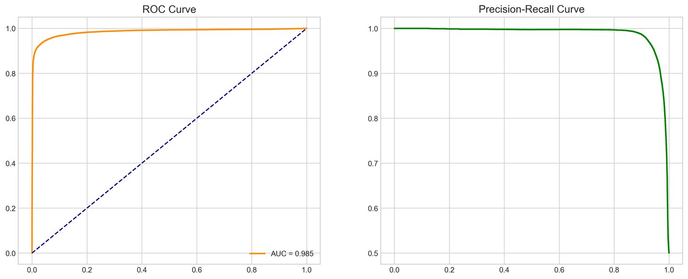
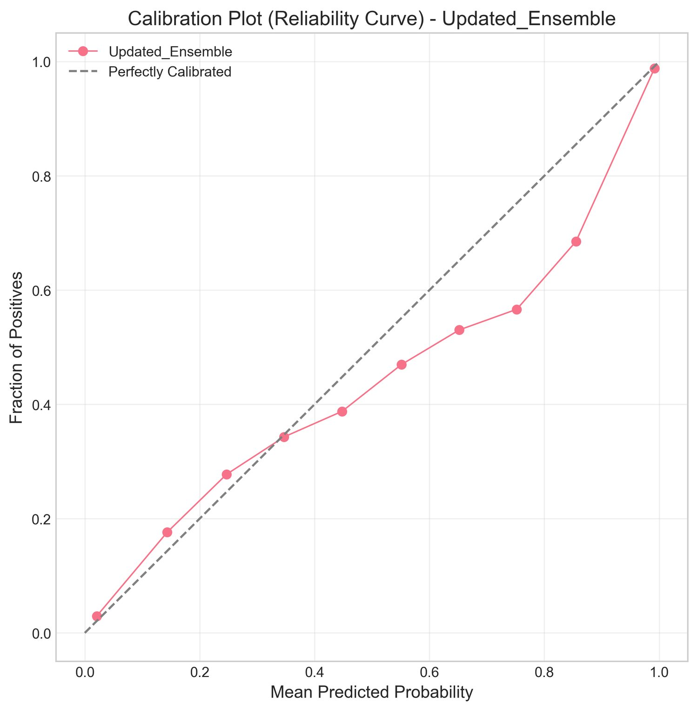
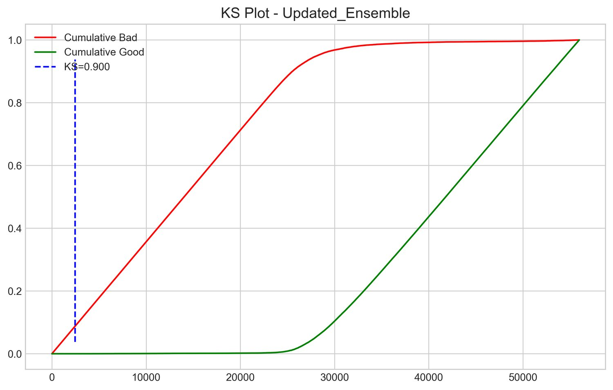
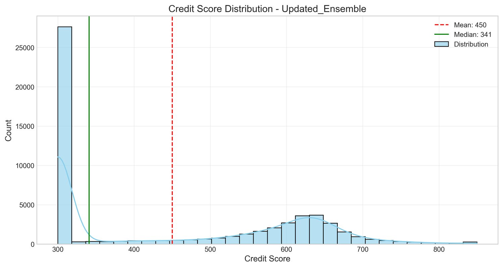
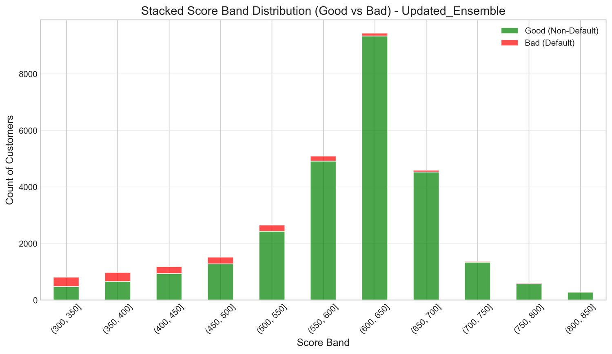
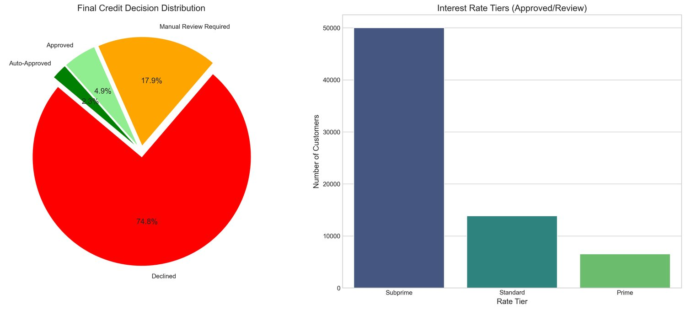

A credit score is only worth something if someone else can check it.
A risk engine for thin-file borrowers in emerging markets: alternative mobile-money data, a stacking ensemble, SHAP attributions for every decision, and a Node.js oracle that commits the result on-chain.
Thin-file borrowers are invisible to conventional credit scoring — and invisible decisions can't be audited.
Millions of people in emerging markets have years of mobile financial services history and no formal credit file. A model can read that alternative data. The harder question is what stops the lender changing the answer afterwards.
- Severe class imbalance. Defaults are rare, so a naive model can score 95% accuracy by predicting 'no default' every time and be completely useless.
- Off-chain inference has no witness. A prediction produced in a notebook is trivially editable after the fact — nothing records what the model actually said, or when.
- Regulators don't accept black boxes. An automated decision that affects credit access has to come with a reason, per applicant, not just a global feature-importance chart.
- Blockchains are terrible databases. Storing the applicant's data on-chain is both prohibitively expensive and a privacy violation.
Score off-chain where compute is cheap. Commit the receipt on-chain where tampering is expensive.
The architecture splits into four planes so PII never touches the chain and the chain never has to run a model.
SMOTE balancing
Interpolates between minority-class samples to synthesise a balanced training distribution.
Stacking ensemble
Level-0: XGBoost (tuned with Optuna) and a 64/32 MLP. Level-1: logistic regression aggregates their probabilities.
PDO score transform
Converts probability of default into an industry-standard 300–850 score via points-to-double-the-odds.
SHAP + IPFS
Per-applicant Shapley attributions bundled into a JSON payload and pinned to IPFS, returning a content ID.
Oracle → Ethereum
A Node.js oracle polls the contract for requests, fetches from IPFS, and writes back the score and CID on-chain.
Model performance, and the engineering decision that came with it.
| Model | AUC | F1 | Precision | Training time |
|---|---|---|---|---|
| Stacking ensemble | 0.984 | 0.948 | 0.956 | 49.2 s |
| XGBoost (shipped) | 0.983 | 0.939 | 0.961 | 1.70 s |
| Random Forest | 0.918 | 0.832 | 0.840 | 5.90 s |
The ensemble wins on AUC by 0.001 and costs 29× the training time. XGBoost went to production — the accuracy difference was not worth the latency for real-time inference.
A 0.001 AUC gain wasn't worth 29× the compute
The ensemble is the better model on paper. XGBoost shipped because it trains in 1.70s with a higher precision score, and precision is what matters when a false approval costs real money.
Every score carries its own reasons
SHAP produces local and global attributions per applicant, so the system can state which variables raised or lowered a specific risk profile — not just which features matter on average.
The oracle assumes the network will fail
Sequential gateway fallback (ipfs.io → Cloudflare → Pinata) lifts an 88% first-attempt success rate to over 99.9% overall. Request IDs are deduplicated in memory so a retry never double-spends gas.
The contract stores receipts, not data
Emitting optimised events instead of writing strings on-chain keeps a request at ~115,000 gas and a fulfilment at ~145,000 — the design constraint that made the whole thing viable.
Model evaluation, tracked in Weights & Biases.
Charts logged during the training runs in the repository. Click to enlarge.





